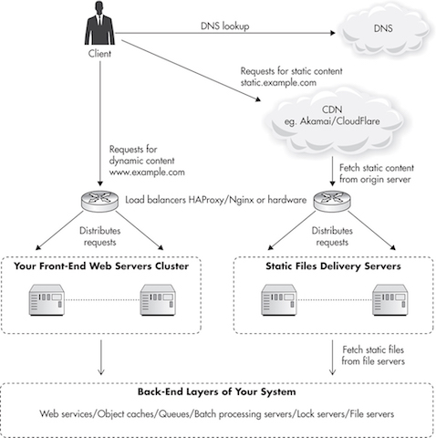
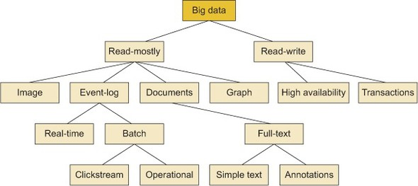
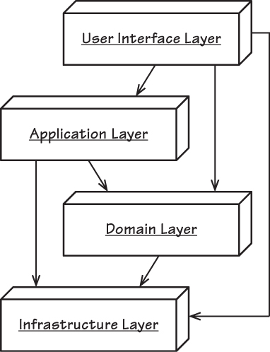
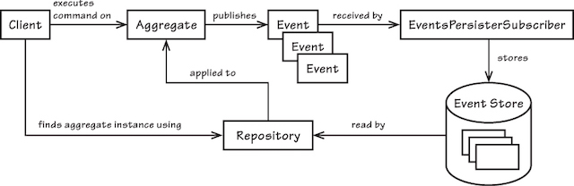
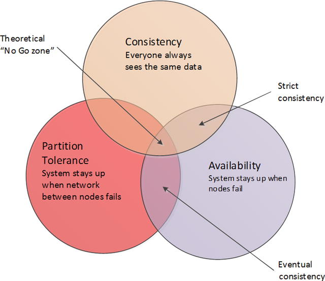
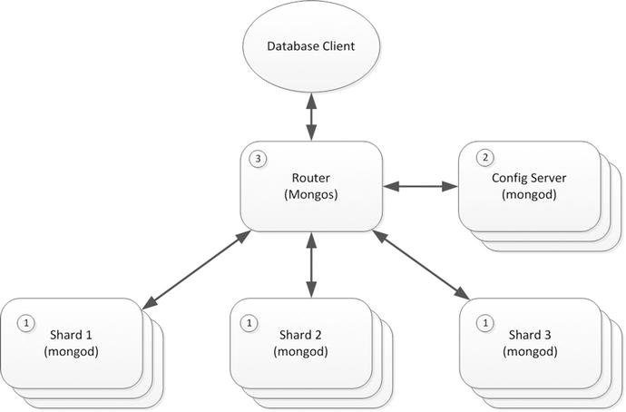

Ardeim
(Ar)chitecture, (De)sign & (Im)plementation
Copyright:
SivaramaSundar, Karthik Kalkur
Thanks to:
Rashmi
Credits:
reveal.js, stripthis (kesiev)
Context
What next!?
Which Technology to choose for App Layer?

NGINX beased on event loop scales well also provides load balncing and reverse proxy capabilities
Choose the Framework with right Threading Model
Multiteactor Pattern Node.js or Vert.x?

CAP Therom
Availability , Constitancy, Partition Tolerance

Ploygot DataBase for different purpose

Ploygot DataBase for different purpose

Which Technology to choose in DB Layer?
Choose the right data base based on the use case for data generation

Which Technology to choose for nature of data
Choose the right data base based on the type of data
Architecture & Design ...
* [Layered Architectures](http://www.softwarearchitectures.com/qa.html) * [Hexagonal Architecture](https://en.wikipedia.org/wiki/Multitier_architecture) * [CQRS](https://en.wikipedia.org/wiki/Multitier_architecture) * [N-Tier](https://en.wikipedia.org/wiki/Multitier_architecture) * [Event Driven / Event Sourcing](https://en.wikipedia.org/wiki/Multitier_architecture)
Layered Architecture

First Basic Architecture
Hexagonal Architecture

The concepts of Adapters with CoreDomain
Hexogonal Architecture SOA

The concepts of Adapters with CoreDomain & with SOA
CQRS

Seperate FLow for Query and Create
Event Sourcing

Events are stored no events are updates or deleted
Event Driven
Different System integrtate using Domain Events
Synchronous does not perform all the time
AMQP based Prtocool Product Rabit MQ
https://maryrosecook.com/blog/post/a-practical-introduction-to-functional-programming https://blog.heroku.com/concurrency_is_not_parallelism https://talks.golang.org/2012/waza.slide#1
https://msdn.microsoft.com/en-us/library/ms998530.aspx https://www.microsoft.com/en-us/download/confirmation.aspx?id=11711 https://msdn.microsoft.com/en-us/library/ff921345.aspx https://msdn.microsoft.com/en-gb/library/ff648138.aspx http://dataguidance.codeplex.com/releases Architecture http://shapingsoftware.com/ http://sourcesofinsight.com/


https://dzone.com/refcardz/design-patterns
Ensuring Quality....
BDD Frameworks
Book: BDD in Action
BDD - Introduction from Dan North

https://leanpub.com/solid/read#leanpub-auto-test-driven-design---tdd http://principles-wiki.net/principles:start
http://www.planetgeek.ch/wp-content/uploads/2013/06/Clean-Code-V2.1.pdf https://www.amazon.in/Clean-Code-Handbook-Software-Craftsmanship-ebook/dp/B001GSTOAM http://www.hanselman.com/blog/SixEssentialLanguageAgnosticProgrammingBooks.aspx https://github.com/chhantyal/influential-cs-books
Performance
http://perftesting.codeplex.com/ http://guidanceengineering.codeplex.com/ https://msdn.microsoft.com/en-us/library/ms998408.aspx https://msdn.microsoft.com/practices


https://rob-bell.net/2009/06/a-beginners-guide-to-big-o-notation/ https://www.youtube.com/watch?v=__vX2sjlpXU https://www.youtube.com/watch?v=v4cd1O4zkGw https://www.youtube.com/watch?v=-Eiw_-v__Vo http://bigocheatsheet.com/ https://en.wikipedia.org/wiki/Big_O_notation http://adrianmejia.com/blog/2014/02/13/algorithms-for-dummies-part-1-sorting/ http://algorithmiccomplexity.com/ http://web.mit.edu/16.070/www/lecture/big_o.pdf
Scalability

Scale Database Layer
CAP Theorem Revisited

HA & Reliability
Master Slave
Master Slave replication
Master Slave
Peer to Peer replication
Sharding of NoSQL Database (Mongo DB)

Sharding of NoSQL Database (Mongo DB .. Continued)

Replication set

Securing the System
https://www.microsoft.com/en-us/download/confirmation.aspx?id=1330 http://azuresecurity.codeplex.com/ https://msdn.microsoft.com/en-us/library/ms998530.aspx https://www.microsoft.com/en-us/download/confirmation.aspx?id=11711 https://msdn.microsoft.com/en-us/library/ff921345.aspx https://msdn.microsoft.com/en-gb/library/ff648138.aspx http://dataguidance.codeplex.com/releases
Operational needs
Single absolute reference : an organized collection of resources for system design
There's much much more, but these links give you focus
* http://blog.cleancoder.com/uncle-bob/2014/10/01/CleanMicroserviceArchitecture.html * http://microservices.io/ * http://www.codingthearchitecture.com/ * https://awesome-tech.readthedocs.io/ http://alistair.cockburn.us/Hexagonal+architecture http://alistair.cockburn.us/Foundations+for+Software+Engineering http://www.idesign.net/ http://www.bredemeyer.com/ https://github.com/checkcheckzz/system-design-interview https://github.com/benas/awesome-software-craftsmanship https://github.com/onurakpolat/awesome-bigdata Books: https://www.manning.com/books/microservice-patterns https://github.com/miguellgt/books